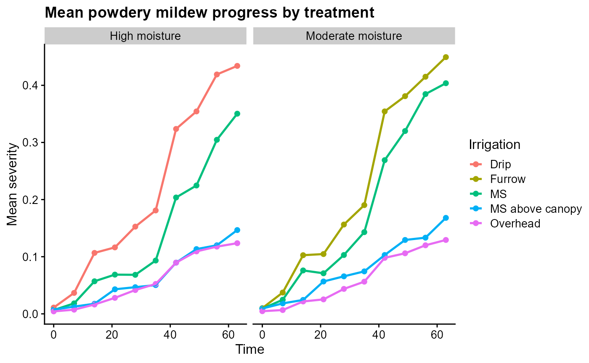
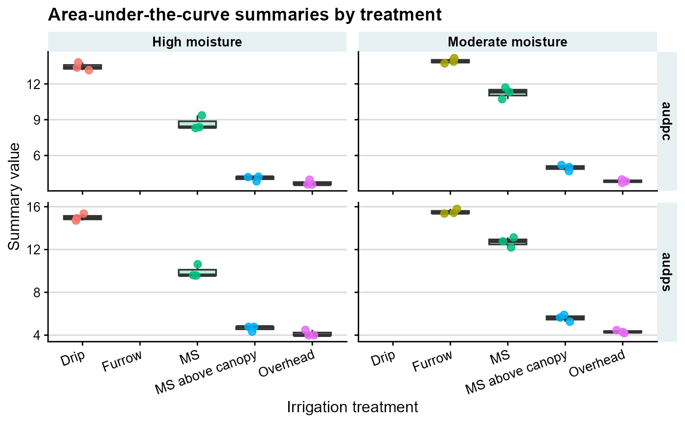
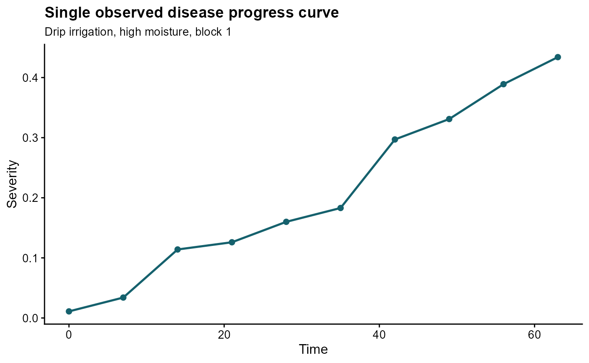
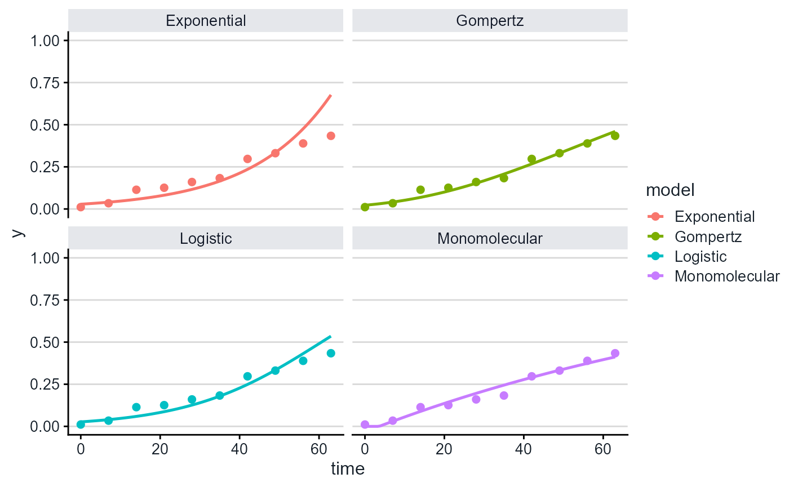

Real-data workflow: powdery mildew in organic tomato
Kaique S. Alves
2026-05-17
Source:vignettes/powdery-mildew-data.Rmd
powdery-mildew-data.Rmd
library(epifitter)
library(dplyr)
library(ggplot2)
library(cowplot)
theme_set(cowplot::theme_half_open(font_size = 12))
data("PowderyMildew")Overview
PowderyMildew is an experimental dataset included in
epifitter. It contains disease progress curves for powdery
mildew in organic tomato under different irrigation systems and soil
moisture levels.
The data are derived from the study by Lage, Marouelli, and Cafe-Filho (2019) on powdery mildew management under different irrigation configurations in organic tomato.
The dataset is especially useful for demonstrating workflows with:
- a real epidemic dataset rather than simulated curves;
- repeated observations over time within experimental blocks;
- treatment comparisons using summary measures and fitted models.
This article is intended for users who want to move from raw experimental data to interpretable epidemic summaries. The guiding principle is to keep the experimental unit clear. Here, each block within an irrigation-by-moisture treatment is repeatedly assessed over time.
Load the data
Use the usual data() interface for packaged
datasets.
| irrigation_type | moisture | block | time | sev |
|---|---|---|---|---|
| Drip | High moisture | 1 | 0 | 0.011 |
| Drip | High moisture | 2 | 0 | 0.011 |
| Drip | High moisture | 3 | 0 | 0.011 |
| Drip | High moisture | 1 | 7 | 0.034 |
| Drip | High moisture | 2 | 7 | 0.040 |
| Drip | High moisture | 3 | 7 | 0.036 |
| Drip | High moisture | 1 | 14 | 0.114 |
| Drip | High moisture | 2 | 14 | 0.109 |
| Drip | High moisture | 3 | 14 | 0.097 |
| Drip | High moisture | 1 | 21 | 0.126 |
| Drip | High moisture | 2 | 21 | 0.120 |
| Drip | High moisture | 3 | 21 | 0.103 |
The dataset contains five variables:
-
irrigation_typefor the irrigation system; -
moisturefor the soil moisture regime; -
blockfor the experimental block; -
timefor the assessment date; -
sevfor disease severity on a proportional scale.
Inspect the experimental structure
PowderyMildew %>%
distinct(irrigation_type, moisture, block) %>%
arrange(irrigation_type, moisture, block) %>%
knitr::kable()| irrigation_type | moisture | block | |
|---|---|---|---|
| 1 | Drip | High moisture | 1 |
| 2 | Drip | High moisture | 2 |
| 3 | Drip | High moisture | 3 |
| 91 | Furrow | Moderate moisture | 1 |
| 92 | Furrow | Moderate moisture | 2 |
| 93 | Furrow | Moderate moisture | 3 |
| 31 | MS | High moisture | 1 |
| 32 | MS | High moisture | 2 |
| 33 | MS | High moisture | 3 |
| 61 | MS | Moderate moisture | 1 |
| 62 | MS | Moderate moisture | 2 |
| 63 | MS | Moderate moisture | 3 |
| 121 | MS above canopy | High moisture | 1 |
| 122 | MS above canopy | High moisture | 2 |
| 123 | MS above canopy | High moisture | 3 |
| 151 | MS above canopy | Moderate moisture | 1 |
| 152 | MS above canopy | Moderate moisture | 2 |
| 153 | MS above canopy | Moderate moisture | 3 |
| 181 | Overhead | High moisture | 1 |
| 182 | Overhead | High moisture | 2 |
| 183 | Overhead | High moisture | 3 |
| 211 | Overhead | Moderate moisture | 1 |
| 212 | Overhead | Moderate moisture | 2 |
| 213 | Overhead | Moderate moisture | 3 |
This is a repeated-measures dataset: each block was assessed across several time points within each irrigation-by-moisture combination.
For most treatment comparisons, the block-level curve is the unit that should produce one summary value or one fitted model. Pooling all blocks together is useful for visualization of treatment means, but it changes the inferential target.
Visualize treatment means over time
A useful first step is to summarize replicated blocks within each treatment and visualize the mean disease progress curve.
pm_summary <- PowderyMildew %>%
group_by(irrigation_type, moisture, time) %>%
summarise(
mean_sev = mean(sev),
.groups = "drop"
)
knitr::kable(head(pm_summary, 12), digits = 4)| irrigation_type | moisture | time | mean_sev |
|---|---|---|---|
| Drip | High moisture | 0 | 0.0110 |
| Drip | High moisture | 7 | 0.0367 |
| Drip | High moisture | 14 | 0.1067 |
| Drip | High moisture | 21 | 0.1163 |
| Drip | High moisture | 28 | 0.1527 |
| Drip | High moisture | 35 | 0.1810 |
| Drip | High moisture | 42 | 0.3237 |
| Drip | High moisture | 49 | 0.3543 |
| Drip | High moisture | 56 | 0.4190 |
| Drip | High moisture | 63 | 0.4340 |
| Furrow | Moderate moisture | 0 | 0.0100 |
| Furrow | Moderate moisture | 7 | 0.0373 |
ggplot(pm_summary, aes(time, mean_sev, color = irrigation_type)) +
geom_point(size = 1.8) +
geom_line(linewidth = 0.9) +
facet_wrap(~ moisture) +
labs(
title = "Mean powdery mildew progress by treatment",
x = "Time",
y = "Mean severity",
color = "Irrigation"
)
Calculate AUDPC and AUDPS per experimental unit
Because block identifies repeated experimental units, a
common analysis is to calculate one summary value per block within each
treatment.
pm_area <- PowderyMildew %>%
group_by(irrigation_type, moisture, block) %>%
summarise(
audpc = AUDPC(time = time, y = sev, aggregate = "none"),
audps = AUDPS(time = time, y = sev, aggregate = "none"),
.groups = "drop"
)
knitr::kable(pm_area, digits = 4)| irrigation_type | moisture | block | audpc | audps |
|---|---|---|---|---|
| Drip | High moisture | 1 | 13.1530 | 14.7105 |
| Drip | High moisture | 2 | 13.8040 | 15.3615 |
| Drip | High moisture | 3 | 13.3700 | 14.9275 |
| Furrow | Moderate moisture | 1 | 13.7270 | 15.3615 |
| Furrow | Moderate moisture | 2 | 14.1645 | 15.7990 |
| Furrow | Moderate moisture | 3 | 13.8670 | 15.4210 |
| MS | High moisture | 1 | 8.3020 | 9.6005 |
| MS | High moisture | 2 | 9.3625 | 10.6260 |
| MS | High moisture | 3 | 8.3755 | 9.5620 |
| MS | Moderate moisture | 1 | 10.7205 | 12.1905 |
| MS | Moderate moisture | 2 | 11.3330 | 12.7645 |
| MS | Moderate moisture | 3 | 11.6970 | 13.1285 |
| MS above canopy | High moisture | 1 | 3.8395 | 4.3225 |
| MS above canopy | High moisture | 2 | 4.2245 | 4.7775 |
| MS above canopy | High moisture | 3 | 4.1930 | 4.7740 |
| MS above canopy | Moderate moisture | 1 | 4.6935 | 5.2535 |
| MS above canopy | Moderate moisture | 2 | 5.2010 | 5.8940 |
| MS above canopy | Moderate moisture | 3 | 5.0365 | 5.6455 |
| Overhead | High moisture | 1 | 3.5770 | 3.9865 |
| Overhead | High moisture | 2 | 3.5665 | 3.9795 |
| Overhead | High moisture | 3 | 3.9725 | 4.4940 |
| Overhead | Moderate moisture | 1 | 3.9935 | 4.4695 |
| Overhead | Moderate moisture | 2 | 3.7065 | 4.1825 |
| Overhead | Moderate moisture | 3 | 3.8360 | 4.2910 |
This differs from pooling all rows together. If all blocks are passed
at once, AUDPC() and AUDPS() assume that you
want one treatment-level summary curve and aggregate repeated
observations at each time point before calculating the area.
Statistically, these block-level values can later be analyzed with
methods that match the experimental design, such as models including
treatment terms and block structure. epifitter computes the
epidemiological summaries; the downstream treatment analysis should
still respect randomization, blocking, and replication.
To compare treatments visually, it is often useful to plot one point per block on top of a boxplot.
pm_area_long <- pm_area %>%
tidyr::pivot_longer(
cols = c(audpc, audps),
names_to = "summary_measure",
values_to = "value"
)
facet_aud <- if (requireNamespace("lemon", quietly = TRUE)) {
lemon::facet_rep_grid(summary_measure ~ moisture, scales = "free_y")
} else {
ggplot2::facet_grid(summary_measure ~ moisture, scales = "free_y")
}
ggplot(
pm_area_long,
aes(irrigation_type, value, fill = irrigation_type)
) +
geom_boxplot(
width = 0.65,
outlier.shape = NA,
alpha = 0.28,
linewidth = 0.6
) +
geom_jitter(
aes(color = irrigation_type),
width = 0.12,
height = 0,
size = 2.4,
alpha = 0.85
) +
facet_aud +
labs(
title = "Area-under-the-curve summaries by treatment",
x = "Irrigation treatment",
y = "Summary value",
color = "Irrigation"
) +
cowplot::theme_half_open(font_size = 12) +
background_grid(major = "y", minor = "none") +
theme(
legend.position = "none",
axis.text.x = element_text(angle = 20, hjust = 1),
strip.background = element_rect(fill = "#e7f1f3", color = NA),
strip.text = element_text(face = "bold")
)
Fit a model to one observed curve
To work with a single disease progress curve, first filter one treatment-by-block combination.
single_curve <- PowderyMildew %>%
filter(
irrigation_type == "Drip",
moisture == "High moisture",
block == 1
)
knitr::kable(single_curve, digits = 4)| irrigation_type | moisture | block | time | sev | |
|---|---|---|---|---|---|
| 1 | Drip | High moisture | 1 | 0 | 0.011 |
| 4 | Drip | High moisture | 1 | 7 | 0.034 |
| 7 | Drip | High moisture | 1 | 14 | 0.114 |
| 10 | Drip | High moisture | 1 | 21 | 0.126 |
| 13 | Drip | High moisture | 1 | 28 | 0.160 |
| 16 | Drip | High moisture | 1 | 35 | 0.183 |
| 19 | Drip | High moisture | 1 | 42 | 0.297 |
| 22 | Drip | High moisture | 1 | 49 | 0.331 |
| 25 | Drip | High moisture | 1 | 56 | 0.389 |
| 28 | Drip | High moisture | 1 | 63 | 0.434 |
ggplot(single_curve, aes(time, sev)) +
geom_point(size = 2, color = "#15616d") +
geom_line(linewidth = 0.9, color = "#15616d") +
labs(
title = "Single observed disease progress curve",
subtitle = "Drip irrigation, high moisture, block 1",
x = "Time",
y = "Severity"
)
Now fit the candidate models to that curve.
The fitted parameters are descriptive summaries of the selected curve. For example, the apparent infection rate is meaningful only in relation to the model form, disease scale, and observed time interval.
single_fit <- fit_lin(time = single_curve$time, y = single_curve$sev)
knitr::kable(single_fit$stats_all, digits = 4)| best_model | model | r | r_se | r_ci_lwr | r_ci_upr | v0 | v0_se | r_squared | RSE | CCC | y0 | y0_ci_lwr | y0_ci_upr |
|---|---|---|---|---|---|---|---|---|---|---|---|---|---|
| 1 | Gompertz | 0.0253 | 0.0018 | 0.0212 | 0.0293 | -1.3374 | 0.0659 | 0.9625 | 0.1120 | 0.9809 | 0.0222 | 0.0119 | 0.0379 |
| 2 | Monomolecular | 0.0089 | 0.0006 | 0.0074 | 0.0104 | -0.0319 | 0.0240 | 0.9603 | 0.0408 | 0.9797 | -0.0324 | -0.0912 | 0.0232 |
| 3 | Logistic | 0.0593 | 0.0076 | 0.0418 | 0.0768 | -3.5948 | 0.2833 | 0.8844 | 0.4819 | 0.9386 | 0.0267 | 0.0141 | 0.0501 |
| 4 | Exponential | 0.0504 | 0.0078 | 0.0323 | 0.0685 | -3.5629 | 0.2932 | 0.8374 | 0.4989 | 0.9115 | 0.0284 | 0.0144 | 0.0558 |
plot_fit(single_fit, point_size = 2, line_size = 0.9)
Fit models to many observed curves at once
fit_multi() is useful when each treatment-by-block
combination should be fitted separately.
pm_multi_fit <- fit_multi(
time_col = "time",
intensity_col = "sev",
data = PowderyMildew,
strata_cols = c("irrigation_type", "moisture", "block")
)
knitr::kable(head(pm_multi_fit$Parameters, 12), digits = 4)| irrigation_type | moisture | block | best_model | model | r | r_se | r_ci_lwr | r_ci_upr | v0 | v0_se | r_squared | RSE | CCC | y0 | y0_ci_lwr | y0_ci_upr |
|---|---|---|---|---|---|---|---|---|---|---|---|---|---|---|---|---|
| Drip | High moisture | 1 | 1 | Gompertz | 0.0253 | 0.0018 | 0.0212 | 0.0293 | -1.3374 | 0.0659 | 0.9625 | 0.1120 | 0.9809 | 0.0222 | 0.0119 | 0.0379 |
| Drip | High moisture | 1 | 2 | Monomolecular | 0.0089 | 0.0006 | 0.0074 | 0.0104 | -0.0319 | 0.0240 | 0.9603 | 0.0408 | 0.9797 | -0.0324 | -0.0912 | 0.0232 |
| Drip | High moisture | 1 | 3 | Logistic | 0.0593 | 0.0076 | 0.0418 | 0.0768 | -3.5948 | 0.2833 | 0.8844 | 0.4819 | 0.9386 | 0.0267 | 0.0141 | 0.0501 |
| Drip | High moisture | 1 | 4 | Exponential | 0.0504 | 0.0078 | 0.0323 | 0.0685 | -3.5629 | 0.2932 | 0.8374 | 0.4989 | 0.9115 | 0.0284 | 0.0144 | 0.0558 |
| Drip | High moisture | 2 | 1 | Gompertz | 0.0269 | 0.0019 | 0.0225 | 0.0314 | -1.3544 | 0.0718 | 0.9609 | 0.1221 | 0.9801 | 0.0208 | 0.0103 | 0.0375 |
| Drip | High moisture | 2 | 2 | Monomolecular | 0.0100 | 0.0010 | 0.0078 | 0.0122 | -0.0456 | 0.0360 | 0.9313 | 0.0612 | 0.9645 | -0.0466 | -0.1372 | 0.0367 |
| Drip | High moisture | 2 | 3 | Logistic | 0.0615 | 0.0073 | 0.0447 | 0.0784 | -3.6037 | 0.2729 | 0.8987 | 0.4643 | 0.9466 | 0.0265 | 0.0143 | 0.0486 |
| Drip | High moisture | 2 | 4 | Exponential | 0.0515 | 0.0075 | 0.0341 | 0.0689 | -3.5582 | 0.2819 | 0.8535 | 0.4795 | 0.9209 | 0.0285 | 0.0149 | 0.0546 |
| Drip | High moisture | 3 | 1 | Gompertz | 0.0268 | 0.0019 | 0.0225 | 0.0311 | -1.3806 | 0.0696 | 0.9628 | 0.1184 | 0.9811 | 0.0187 | 0.0094 | 0.0338 |
| Drip | High moisture | 3 | 2 | Monomolecular | 0.0097 | 0.0009 | 0.0076 | 0.0118 | -0.0473 | 0.0339 | 0.9347 | 0.0576 | 0.9663 | -0.0484 | -0.1336 | 0.0303 |
| Drip | High moisture | 3 | 3 | Logistic | 0.0621 | 0.0069 | 0.0461 | 0.0781 | -3.6884 | 0.2591 | 0.9093 | 0.4409 | 0.9525 | 0.0244 | 0.0136 | 0.0435 |
| Drip | High moisture | 3 | 4 | Exponential | 0.0524 | 0.0072 | 0.0359 | 0.0689 | -3.6411 | 0.2672 | 0.8703 | 0.4546 | 0.9307 | 0.0262 | 0.0142 | 0.0486 |
This output keeps the original stratification variables, which makes it easier to compare fitted parameters among irrigation systems, moisture regimes, and blocks.
For formal treatment comparisons of fitted parameters, treat these outputs as derived variables and analyze them using a model consistent with the trial design. Avoid treating repeated assessments from the same block as independent treatment replicates.
Practical guidance
- Use
data("PowderyMildew")to load the bundled dataset. - Use grouped summaries by
blockwhen you want one AUDPC or AUDPS value per experimental unit. - Use grouped means over time when the goal is a treatment-level visualization.
- Use
fit_lin()for a quick model ranking on one observed curve. - Use
fit_multi()when you want to fit many treatment-block curves in a single workflow.